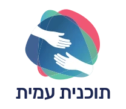

מפגשים פרטניים
מרחב אישי לילדים, בני נוער ומבוגרים, להיכרות עם רגשות, להתמודדות עם קשיים ולגילוי כוחות.
דרך הקשר עם הכלבים, המשחק והחוויה המשותפת, נפתח מרחב להיכרות עם רגשות, להתמודדות עם קשיים ולגילוי כוחות.
מפגשים פרטניים וקבוצתיים · ילדים, נוער ומבוגרים · באר שבע והסביבהבעל תואר שני בקרימינולוגיה קלינית
ומטפל רגשי בעזרת כלבים.
אני חי את עולמות הטיפול כבר שנים, ועובד עם ילדים, בני נוער ומבוגרים ממגוון רקעים ובעלי צרכים שונים, במפגשים פרטניים וקבוצתיים. הניסיון שלי כולל עבודה בתחום בריאות הנפש, עם אנשים עם צרכים מיוחדים, ועם מי שמתמודדים עם קשיים רגשיים וחברתיים, קשיי ויסות, לחץ וחרדה. לצד זאת, אני עוסק גם בהדרכת הורים ובטיפולי הורה־ילד.
דרך הקשר עם הכלבים, המשחק והחוויה המשותפת, אני יוצר מרחב להיכרות עם רגשות, להתמודדות עם קשיים ולגילוי כוחות. חשוב לי להתאים את המפגש לאדם שמולי — לגיל, לצרכים, לקצב ולמה שמעניין אותו.
לצד העבודה הטיפולית, אני מפתח משחקים וכלים לשימוש בטיפול, בחינוך ובבית, שמאפשרים לפתוח שיחה, ללמוד ולהתנסות דרך משחק.
הקשר עם הכלבים, המשחק והחוויה המשותפת הם חלק ממרחב טיפולי שמותאם לאדם שמולי — לגיל, לצרכים, לקצב ולמה שמעניין אותו.
מרחב אישי לילדים, בני נוער ומבוגרים, להיכרות עם רגשות, להתמודדות עם קשיים ולגילוי כוחות.
מפגשים שמשלבים קשר עם הכלבים, משחק ושיחה, עם מקום לצרכים השונים של המשתתפים.
לצד העבודה עם ילדים, אני מלווה גם הורים ועוסק במפגשים משותפים להורה ולילד.
ייעוץ ופיתוח תכניות טיפול והתערבות המותאמות לצרכים של קבוצות וארגונים.
הקצב, הצרכים והדרך שלכם הם נקודת ההתחלה.
נדבר על המפגשים שמתאימים לכם ↗הודעות ומכתבי תודה, במילים של מי שכתבו אותם.
אני ספק טיפול רגשי בעזרת כלבים גם דרך תכנית עמית, אגף השיקום במשרד הביטחון, MOVE ומסלולים של משרדי ממשלה וארגונים.
רוצים לבדוק אם המסלול שלכם מתאים? מוזמנים לפנות אליי לפרטים, לבדיקת זכאות ולתיאום טיפול בבאר שבע והסביבה.
לבדיקת זכאות ולתיאום טיפול ↗ הזכאות ואופן המימוש נבדקים בהתאם למסלול שלכם.
תכנית עמיתלחיילים משוחררים ולמילואימניקיםטיפול, ליווי ופעילות עם מסגרות וארגונים שונים, בעבר ובהווה.
החיבור בין אדם לכלב, במפגש משותף.
לפרטים על המפגשים, המשחקים והכלים — מוזמנים ליצור קשר.